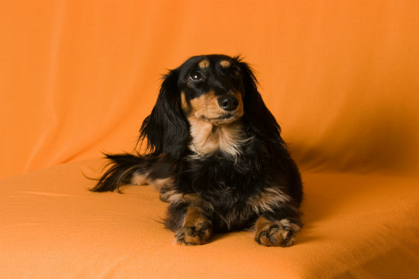

Bem-vindo à Minha Página!
Ter um salsicha é muito bom para que se tenha companhia durante seus dias chatos, tristes ou felizes.
A capacidade deles de nos encantar e alegrar com seus olhinhos de juaboticaba é impressionante, e seu senso de companheirismo é gigantesco,
proporcionando momentos incríveis ao seu lado.
Existem vários tipos de salsichinhas, os pretinhos, marronzinhos, os mofados, os de luvinhas, com e sem pelinhos.
E não importa qual você escolha para te acompanhar em sua jornada, tenho certeza que não se arrependerá!.